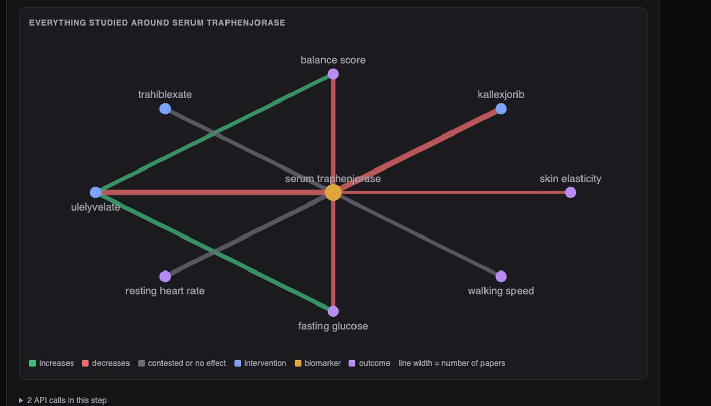
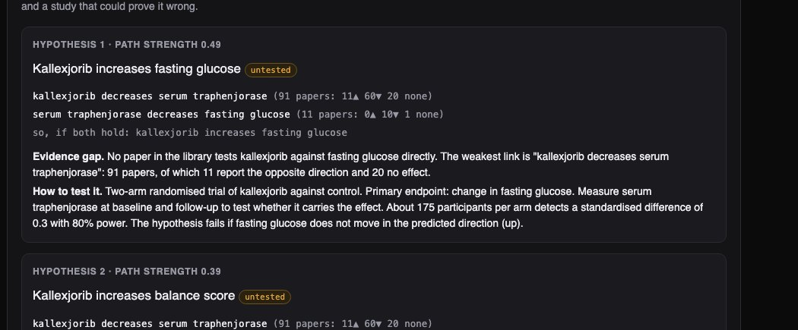

Python · Text mining · Evidence graphs · 2026-10
What Has Nobody Tested Yet?
A research engine over 4,000 generated papers: it extracts each finding, weighs what supports and contradicts a claim, and proposes hypotheses no paper has tested, each with its evidence and a study that could disprove it. On ten test fields, 72% of its top five proposals were real hidden effects, against 4% for random guesses.

Built from a written blueprint as one vertical slice. None of this is real science: the papers are generated from a hidden cause-and-effect graph, with invented drug and biomarker names, so that every output can be checked. The sentences come from template banks, which is why extraction scores 100%. No language model is used. Not built: real paper sources (OpenAlex, PubMed), PDF parsing, effect-size meta-analysis, Kafka, Terraform, single sign-on.
01 — The problem
No researcher can read everything in their field. Papers contradict each other, the first result on a question is often wrong, and connections between separate lines of work go unnoticed because nobody reads both. Can software lay out the evidence for and against a claim, and point to promising questions that nobody has asked, without making things up?
Blueprint 3 of ten in a second build book, built as its demo scenario end to end.
02 — What I built
A Python service on PostgreSQL with a background worker and a web page, started by one docker compose up.
- Claim extraction: each finding becomes "X increases / decreases / does not affect Y".
- Citation reading: does a citing paper agree, disagree, or just mention?
- Evidence view: everything for and against a claim, pooled by study quality.
- Review table: the verdict by study design and by period, and what it rests on.
- Hypotheses: untested links implied by two well-supported ones, behind a strict evidence gate.
03 — How it was built
- 01
Read only what the paper found
Abstracts restate older claims in their background ("earlier work suggested that X increases Y") and report negatives in awkward ways ("X did not reduce Y"). So only the results section is read, and negation words turn a finding into "no effect". A simpler reader that takes any sentence with two terms and a direction word got 57% right; this one got all of them on these template-built abstracts.
if negation and re.search(NEGATED, low): return 0 - 02
Pool the evidence, weighted by quality
For one question, every paper's finding is counted, weighted by study design (a randomised trial counts three times a cross-sectional study) and by sample size. The score runs from -1 to +1. In the demo, 59 papers agree with the claim, 11 found the opposite and 20 found nothing: a clear verdict with visible dissent. Believing the first paper published on each question would be right 81% of the time; the pooled verdict was wrong on 2 of 1,357 real effects.
score = (up - down) / total if total else 0.0 - 03
Look for the missing third link
If drug A reliably lowers biomarker B, and B reliably lowers outcome C, and no paper has ever tested A against C, that pair is a candidate. Directions multiply along the path (lowering something that lowers C should raise C). Two paths that disagree cancel out.
if (a, c) not in studied and a != c: cands.setdefault((a, c), []).append({"via": b, "sign": s1 * s2, "strength": round(w1 * w2, 3)}) - 04
Refuse when the evidence is thin
A link may carry a hypothesis only if at least 3 papers agree and the pooled score is 0.4 or more. For a claim with no such onward links the engine returns nothing, and says why. Every hypothesis that does come out names its weakest link, how many papers disagree with it, and a trial that could prove it wrong.
MIN_PAPERS, MIN_CONSENSUS = 3, 0.4 - 05
Check against the hidden answer
Because the field was generated from a known graph, each hypothesis can be looked up. Across ten other fields, 72% of the top five were real effects, and the predicted direction was right 115 times out of 116. An honest surprise: simply counting how many intermediates connect a pair did almost as well (68%), so the value is in the structure and the gate, not in my scoring formula.
assert t["papers_testing_it"] == 0 and "No paper in the library tests" in h["evidence_gap"]
04 — Results
The demo claim: kallexjorib decreases serum traphenjorase. Of 90 other papers, 59 agree, 11 found the opposite, 20 found no effect. All 17 randomised trials agree or find nothing; cross-sectional studies are split.

On ten other generated fields:
| Top 5 proposals | Real effects |
|---|---|
| This build | 72% |
| Count the connections | 68% |
| Random untested pair | 4% |
The fields are built so that two solid links usually imply a direct effect. Real science is not, so 72% is a ceiling for the idea, not a forecast.
Checks. 33 tests, including: the reader ignoring restated and negated claims, conflicting paths cancelling, a second ingest adding nothing, a retried request storing one set of hypotheses, and one institution's library unreachable from another's.
05 — What I'd do next
- Real abstracts from OpenAlex or PubMed, with a language model doing the extraction into the same structured form.
- Pool effect sizes instead of counting directions.
- A reviewer sign-off before a hypothesis is shared.